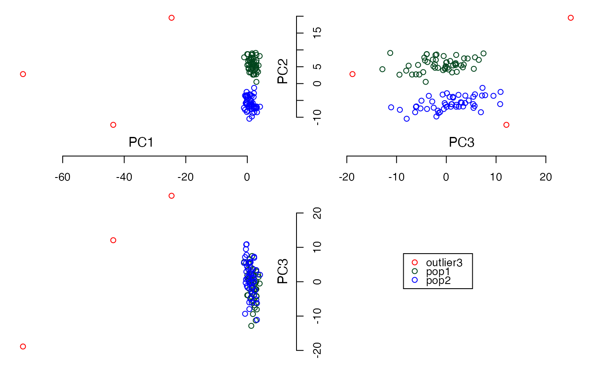

Visualize data in X-Y plane, X-Z plane, and Y-Z plane. The input object (matrix or data.frame) must contain at least 3 columns.
plot3views(
X,
labels,
only.row = NA,
plot.legend = NA,
plot.pattern = NA,
plot.color = NA
)A matrix or a data.frame that contains at least 3 columns of numeric data. If there are more than 3 columns in X, only the first 3 columns will be used.
A vector containing row labels of X for display. All vector elements should be of type "character" (as.character). The length of vector equals the number of rows in X.
A vector that contains subset of row numbers that are selected to be plotted. Default = NA.
A vector of characters representing legends, also see the note below. Default = NA.
A vector of characters or integer representing patterns, also see the note below. Default = NA.
A vector of characters or integer representing colors, also see the note below. Default = NA.
Note that the vectors of plot.legend, plot.pattern, and plot.color need to be defined as the same length. All of these vectors need to be given to the function otherwise the default colors and patterns will be used. The vectors need to be set properly, see the section "Examples" for more details.
From version 1.1.5 onward, the parameter 'col.pat.table' is removed out from the function.
#Load simulated dataset
data(example_SNP)
PCs <- cal.pc.linear(simsnp$snp, no.pc = 3)
plot3views( PCs$PC, sample_labels)
#To change colors and patterns using symbols
all.labels <- unique(sample_labels)
my.colors <- c('pink', 'yellow', 'cyan', 'green')
my.patterns <- c(0,1,2,3)
plot3views(PCs$PC, labels = sample_labels, plot.legend = all.labels,
plot.pattern = my.patterns, plot.color = my.colors)

#To change patterns using characters
my.patterns <- c('o', 'x', '&', '#')
#To change colors using Hex code
my.colors <- c('#E74C3C', '#8E44AD', '#2ECC71', '#E67E22')
plot3views(PCs$PC, labels = sample_labels, plot.legend = all.labels,
plot.pattern = my.patterns, plot.color = my.colors)